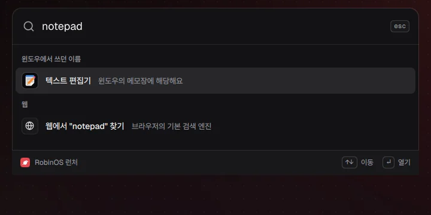
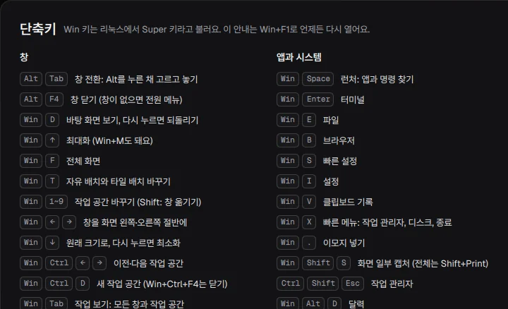
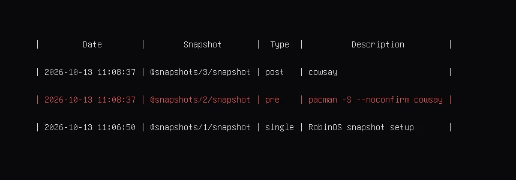
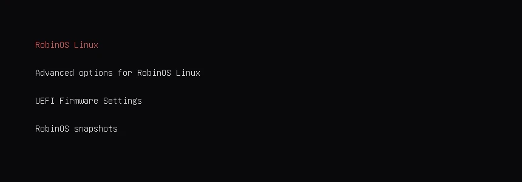
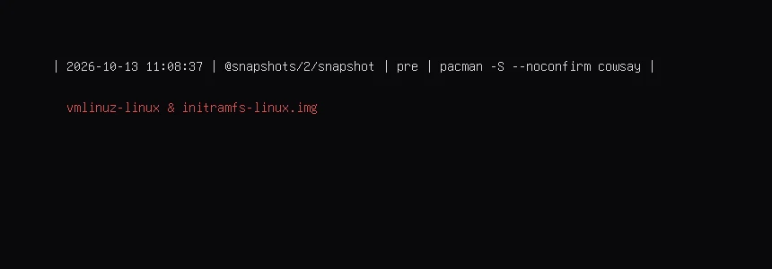
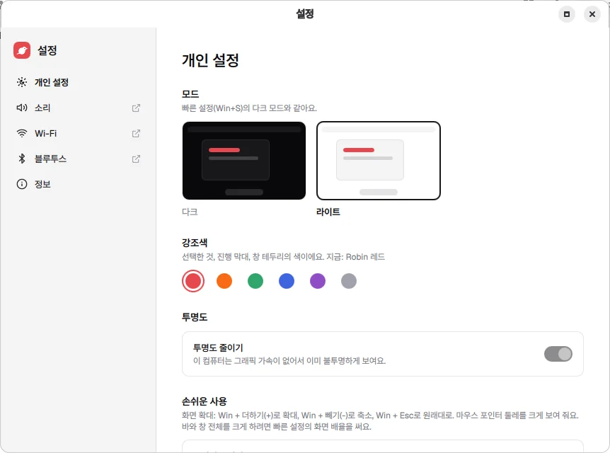
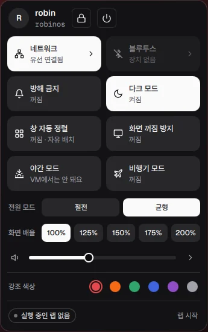

RobinOS로 시작하는
첫 리눅스
Win+E와 Alt+Tab이 그대로 되고, 막히면 터미널이 리눅스 명령을 알려 줘요.
- 작업 관리자: 미션 센터
- 메모장: 텍스트 편집기
- 파일 탐색기: 파일
- 제어판: 설정
- Microsoft Store: 앱 스토어
- 캡처 도구: Win+Shift+S
- ipconfig: ip a
- tasklist: ps aux
- dir: ls -l
- eventvwr: journalctl -b
- netstat: ss -tulpn
- taskkill: kill
작업 관리자미션 센터
메모장텍스트 편집기
파일 탐색기파일
제어판설정
Microsoft Store앱 스토어
캡처 도구Win+Shift+S
작업 관리자미션 센터
메모장텍스트 편집기
파일 탐색기파일
제어판설정
Microsoft Store앱 스토어
캡처 도구Win+Shift+S
ipconfigip a
tasklistps aux
dirls -l
eventvwrjournalctl -b
netstatss -tulpn
taskkillkill
ipconfigip a
tasklistps aux
dirls -l
eventvwrjournalctl -b
netstatss -tulpn
taskkillkill
익숙한 것부터 시작해요
윈도우에서 쓰던 이름으로 찾기

단축키 그대로 Win+F1

.exe를 열면 대신 쓸 앱

작업 보기 Win+Tab

막히는 곳에서 배워요
윈도우 명령을 쳐 보세요.
robin@robinos: ~
robin@robinos ~ > ipconfig
ipconfig 명령은 윈도우용이에요. 리눅스에서는
ip a IP 주소와 네트워크 장치를 보여 줘요
직접 해 보기: 학습 미션 6 → robinctl learn show 6

학습 미션 45개
실제 터미널에서 풀고, 채점은 robinctl이 해요.
45학습 미션
75윈도우 명령 힌트
86바뀔 때마다 확인하는 화면
업데이트가 잘못되면 되돌려요



-
업데이트 전에 저절로 스냅샷
직전(pre)과 직후(post)가 목록에 남아요.
-
부팅 메뉴에서 고르기
"RobinOS snapshots"로 들어가요.
-
그 스냅샷으로 켜고 되돌리기
켜진 뒤 알림의 "이 상태로 되돌리기"를 눌러요.
스냅샷은 시스템만 되돌려요. 사진과 문서는 백업 앱으로 따로 남겨요.


설치 전에 알아 둘 것
지금은 미리 보기예요
- 가상 머신에서 켜기, 설치, 되돌리기
- 확인함
- 실제 PC에서 켜기
- 아직
- 실제 윈도우 옆에 설치
- 아직
- 보안 부팅
- 꺼야 해요
어떻게 확인했나요
- 윈도우가 지워지나요?
- USB로 써 보기만 하면 그대로예요. 설치할 때 "윈도우 옆에"를 고르면 남겨요.
- BitLocker는요?
- 보안 부팅을 끄면 복구 키를 물을 수 있어요. 미리 확인해 두세요.
- 카카오톡, HWP, 은행은요?
- 윈도우 프로그램은 그대로 안 돌아가요. HWP는 LibreOffice로 열어 볼 수 있어요.
- 내 파일도 되돌아가나요?
- 아니요. 스냅샷은 시스템만이에요.
- 어떤 컴퓨터가 필요해요?
- 64비트 UEFI PC, 디스크 40GB, 설치할 때 인터넷.
- 다른 리눅스와 뭐가 달라요?
- 윈도우 이름과 명령에서 리눅스로 이어 줘요. 안정성이 먼저라면 Mint나 Ubuntu가 나을 수 있어요.
설치하기 전에 먼저 켜 봐요
ISO 내려받기
체크섬과 서명으로 확인해요.
USB로 켜기
Rufus나 Ventoy로 담고, 보안 부팅을 꺼요.
써 보고 설치하기
독의 "RobinOS 설치"를 눌러요.

RobinOS로 시작하는 첫 리눅스
무료, 오픈 소스예요.
미리 보기 v0.3 · 2026년 10월 13일